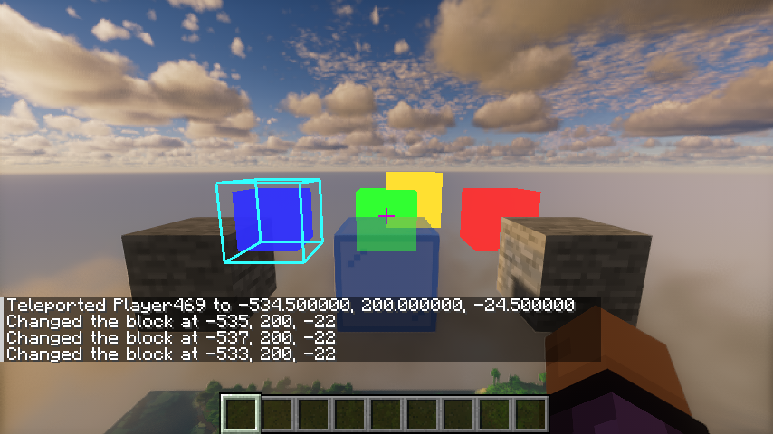
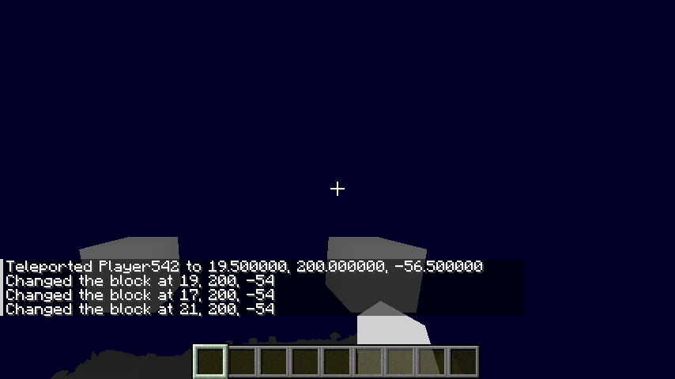
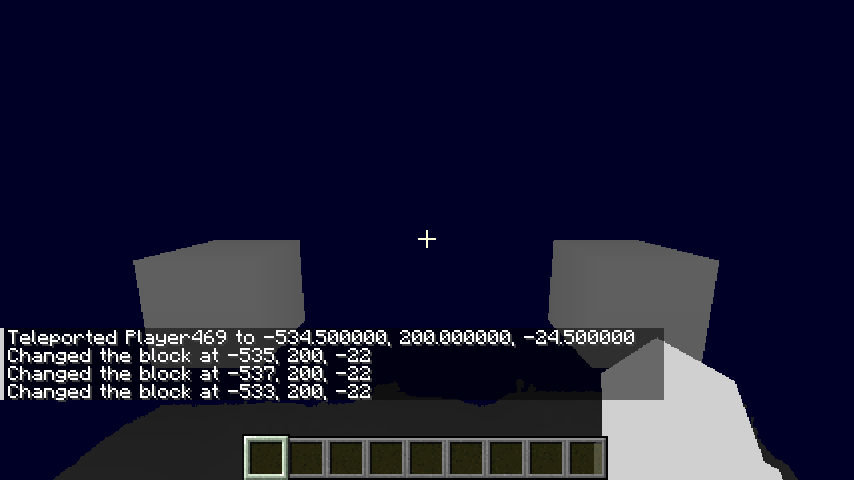
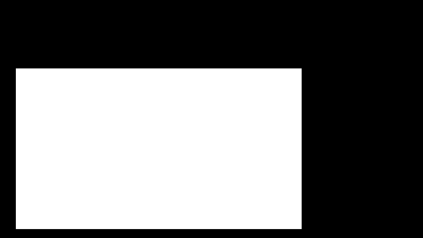
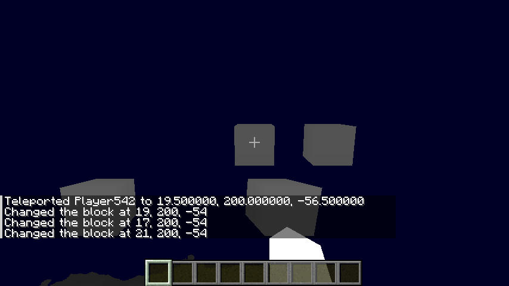
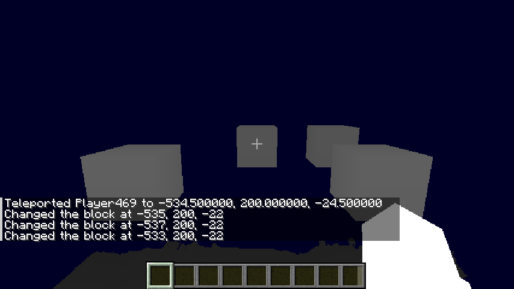
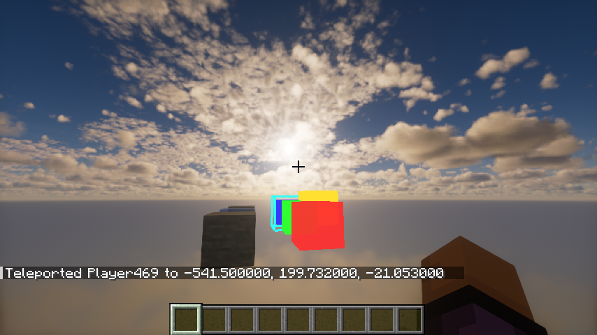

<title>EXIT 渲染缩放对齐</title>
<meta name="claude:viewport-fit-sides" content="cover">
<link rel="preconnect" href="https://fonts.googleapis.com">
<link rel="stylesheet" href="https://fonts.googleapis.com/css2?family=Noto+Sans+SC:wght@400;500;700&family=IBM+Plex+Mono:wght@400;500&display=swap">
<style>
/* 布局：一列正文（约 46em），截图对比用两列网格，手机上叠成一列。
   编辑说明：文字直接改 HTML；流程图改下面 <pre class="mermaid"> 里的文本；图片在 img/ 目录。 */
:root {
  --bg: #f4f6fa;          /* 页面底色，偏冷的纸色 */
  --surface: #ffffff;     /* 卡片、图框 */
  --fg: #1a2033;          /* 正文 */
  --muted: #5b6478;       /* 次要文字、图注 */
  --line: #d8deea;        /* 分隔线、边框 */
  --depth: #2f4fc4;       /* 主色：深度缓冲的蓝 */
  --probe: #c97a12;       /* 探针、测量相关的强调色 */
  --bad: #b8433a;         /* 修复前 */
  --good: #2c8a55;        /* 修复后 */
  --code-bg: #e9edf5;
  --font-body: "Noto Sans SC", "PingFang SC", "Microsoft YaHei", system-ui, sans-serif;
  --font-mono: "IBM Plex Mono", ui-monospace, "Cascadia Mono", Consolas, monospace;
}
@media (prefers-color-scheme: dark) {
  :root:not([data-theme="light"]) {
    --bg: #10131c; --surface: #181c28; --fg: #e3e7f1; --muted: #9aa3b8; --line: #2b3142;
    --depth: #8ea4ff; --probe: #f0a845; --bad: #ef8a80; --good: #6fcf97; --code-bg: #20263a;
    color-scheme: dark;
  }
}
:root[data-theme="dark"] {
  --bg: #10131c; --surface: #181c28; --fg: #e3e7f1; --muted: #9aa3b8; --line: #2b3142;
  --depth: #8ea4ff; --probe: #f0a845; --bad: #ef8a80; --good: #6fcf97; --code-bg: #20263a;
  color-scheme: dark;
}

body {
  background: var(--bg);
  color: var(--fg);
  font-family: var(--font-body);
  font-size: 16px;
  line-height: 1.75;
}
.page {
  max-width: 62rem;
  margin: 0 auto;
  padding-block: 2.5rem 4rem;
  padding-left: max(16px, env(safe-area-inset-left, 0px));
  padding-right: max(16px, env(safe-area-inset-right, 0px));
  display: grid;
  gap: 3rem;
}
.prose { max-width: 46em; min-width: 0; }
h1, h2, h3 { text-wrap: balance; line-height: 1.3; margin: 0; }
h1 { font-size: 2rem; font-weight: 700; }
h2 { font-size: 1.4rem; font-weight: 700; }
h3 { font-size: 1.05rem; font-weight: 700; }
p { margin: 0; }
.stack { display: grid; gap: 1rem; }
.eyebrow {
  font-family: var(--font-mono); font-size: 0.78rem; letter-spacing: 0.06em;
  text-transform: uppercase; color: var(--muted);
}
code, .mono { font-family: var(--font-mono); font-size: 0.88em; }
code { background: var(--code-bg); padding: 0.1em 0.35em; border-radius: 4px; overflow-wrap: anywhere; }
a { color: var(--depth); }
a:focus-visible, button:focus-visible { outline: 2px solid var(--probe); outline-offset: 2px; }

/* 顶部：问题一句话 + 两张对比 */
header.lead { display: grid; gap: 1.25rem; }
.lead .summary { color: var(--muted); max-width: 46em; }

/* 截图对比 */
.pair { display: grid; grid-template-columns: repeat(2, minmax(0, 1fr)); gap: 1rem; }
.trio { display: grid; grid-template-columns: repeat(3, minmax(0, 1fr)); gap: 1rem; }
@media (max-width: 720px) { .pair, .trio { grid-template-columns: 1fr; } }
figure { margin: 0; display: grid; gap: 0.5rem; align-content: start; min-width: 0; }
figure .frame {
  position: relative; border: 1px solid var(--line); border-radius: 6px; overflow: hidden;
  background: #000; aspect-ratio: 854 / 480; max-width: 100%;
}
figure img, figure svg.overlay { display: block; width: 100%; height: 100%; }
figure svg.overlay { position: absolute; inset: 0; }
figcaption { font-size: 0.88rem; color: var(--muted); line-height: 1.6; }
.tag {
  display: inline-block; font-family: var(--font-mono); font-size: 0.72rem; font-weight: 500;
  letter-spacing: 0.04em; padding: 0.05em 0.5em; border-radius: 999px; margin-right: 0.4em;
  border: 1px solid currentColor;
}
.tag.bad { color: var(--bad); }
.tag.good { color: var(--good); }
.tag.probe { color: var(--probe); }

/* 流程图 */
.chart {
  background: var(--surface); border: 1px solid var(--line); border-radius: 8px;
  padding: 1rem; overflow-x: auto;
}
.chart pre.mermaid { margin: 0; background: transparent; font-family: var(--font-body); min-width: 40rem; }

/* 步骤：真实的执行顺序，所以用编号 */
ol.steps { list-style: none; margin: 0; padding: 0; display: grid; gap: 2.5rem; counter-reset: step; }
ol.steps > li { counter-increment: step; display: grid; grid-template-columns: 2.5rem minmax(0, 1fr); gap: 0 1rem; }
ol.steps > li::before {
  content: counter(step); font-family: var(--font-mono); font-weight: 500; font-size: 0.95rem;
  width: 2rem; height: 2rem; border-radius: 50%; display: grid; place-items: center;
  border: 1.5px solid var(--depth); color: var(--depth); margin-top: 0.1rem;
}
ol.steps > li.probe-step::before { border-color: var(--probe); color: var(--probe); }
.step-body { display: grid; gap: 0.85rem; min-width: 0; }
.where { font-size: 0.85rem; color: var(--muted); }

/* 数字表 */
.table-wrap { overflow-x: auto; }
table { border-collapse: collapse; font-size: 0.9rem; font-variant-numeric: tabular-nums; min-width: 32rem; }
th, td { text-align: left; padding: 0.4rem 0.9rem 0.4rem 0; border-bottom: 1px solid var(--line); }
th { font-weight: 500; color: var(--muted); }
td.num { font-family: var(--font-mono); }

.note {
  border-left: 3px solid var(--line); padding: 0.25rem 0 0.25rem 1rem; color: var(--muted); font-size: 0.92rem;
}
ul.plain { margin: 0; padding-left: 1.2em; display: grid; gap: 0.35rem; }
</style>

<main class="page">

  <!-- ========== 开头：问题 ========== -->
  <header class="lead">
    <p class="eyebrow">EXIT · Minecraft 26.3 · Iris · Kappa v5.3</p>
    <h1>降分辨率光影下的遮挡对齐</h1>
    <p class="summary">
      Kappa 这类 TAAU 光影把整个场景画进深度缓冲左下角 75% 的区域，再在 composite 放大回全屏。
      EXIT 按全分辨率坐标读这些深度，于是石头、手、玻璃的遮挡都跑到了缩小后的位置。
      现在 EXIT 先测出光影的缩放，再把深度重采样回全分辨率，所有遮挡判断就对齐了。
    </p>
    <div class="pair">
      <figure>
        <div class="frame"></div>
        <figcaption><span class="tag bad">修复前</span>右边的石头没有挡住红色方块；绿色方块在浅蓝玻璃后面仍是原本的亮度。</figcaption>
      </figure>
      <figure>
        <div class="frame"></div>
        <figcaption><span class="tag good">修复后</span>石头挡住了红色方块的右下角；绿色方块被玻璃盖住的下半部分变暗到 50%。左边的蓝色方块走的是透视通道，穿过石头照常显示。</figcaption>
      </figure>
    </div>
    <p class="note">截图来自 EXIT 自带的冒烟测试 <code>./gradlew :fabric:runSmokeClient</code>，854×480，光影 Kappa v5.3（默认 <code>ResolutionScale = 0.75</code>）。“修复前”是同一份代码临时关掉缩放测量拍的。</p>
  </header>

  <!-- ========== 流程图 ========== -->
  <section class="stack" aria-labelledby="flow-title">
    <h2 id="flow-title">一帧里发生了什么</h2>
    <p class="prose">橙色是测量缩放的部分，每次换光影或改窗口大小后只跑一次；蓝色是每帧都走的深度处理。</p>
    <div class="chart">
<!-- 流程图源码：直接改文字即可。语法见 https://mermaid.js.org/syntax/flowchart.html -->
<pre class="mermaid">
flowchart TD
  A["光影画世界<br/>顶点 xy × 0.75，内容挤在缓冲左下角"] --> B{"Iris beginHand<br/>（没有手时是 beginTranslucents）"}
  B --> C["复制场景深度<br/>noHand / opaque 两份"]
  C --> D{"这个光影、这个尺寸<br/>测过缩放了吗？"}
  D -- 测过 --> R
  D -- 没测过 --> P1["备份主深度 before"]
  P1 --> P2["用 entity 管线副本画探针四边形<br/>裁剪坐标 ±0.9，Iris 换成光影程序<br/>不写颜色，深度总是写入"]
  P2 --> P3["复制主深度 after<br/>用 before 写回主深度<br/>清一次掩码纹理，恢复写入掩码"]
  P3 --> P4["掩码通道：after ≠ before 的像素记为白"]
  P4 --> P5["异步读回 CPU<br/>找白色包围盒，解出每轴 a、b"]
  P5 --> P6{"|a−1| &lt; 0.01 且 |b| &lt; 2px？"}
  P6 -- 是：只是 TAA 抖动 --> P7["按全分辨率处理"]
  P6 -- 否：光影在缩放 --> P8["记下 a、b，下一帧起生效"]
  P7 --> R
  P8 --> R
  R{"缩放了吗？"} -- 没有 --> S1["深度副本直接复制"]
  R -- 有 --> S2["深度副本重采样<br/>全分辨率像素 p 读光影像素 a·p + b"]
  S1 --> T
  S2 --> T
  T["EXIT 通道绘制<br/>DepthSeed 用 opaque 打底，手的位置设为最近"] --> U["帧末合并<br/>手的像素不画；半透明后面变暗<br/>主深度同样先重采样再比较"]
  U --> V["输出画面"]

  classDef probe fill:#fbecd6,stroke:#c97a12,color:#3a2606;
  classDef depth fill:#e3e9fb,stroke:#2f4fc4,color:#14204d;
  class P1,P2,P3,P4,P5,P6,P7,P8,D probe;
  class C,R,S1,S2,T,U depth;
</pre>
    </div>
  </section>

  <!-- ========== 分步说明 ========== -->
  <section class="stack" aria-labelledby="steps-title">
    <h2 id="steps-title">分步说明</h2>
    <ol class="steps">

      <!-- 步骤 1 -->
      <li>
        <div class="step-body">
          <h3>光影把场景缩进左下角</h3>
          <p class="prose">
            Kappa 的每个 gbuffers 顶点着色器最后都会调用 <code>VertexDownscaling(gl_Position)</code>，把裁剪坐标的 xy 乘以 <code>ResolutionScale</code>。
            缓冲本身还是全尺寸，只是内容被画在左下角 75% 的区域里，到 composite 才由 TAAU 放大。
            画面看起来正常，但深度缓冲里的东西是缩小的。
          </p>
          <div class="pair">
            <figure>
              <div class="frame"></div>
              <figcaption><span class="tag bad">修复前</span>EXIT 拿到的场景深度（越近越白）。两块石头和右下角的手都比画面里的位置更靠左下，也更小。</figcaption>
            </figure>
            <figure>
              <div class="frame"></div>
              <figcaption><span class="tag good">修复后</span>重采样之后，石头和手的位置和画面一致。浅蓝玻璃不在这份深度里，它是半透明的，在这次复制之后才画。</figcaption>
            </figure>
          </div>
          <p class="where">代码：<code>SceneDepth.captureBeforeHand()</code>、<code>captureBeforeTranslucents()</code></p>
        </div>
      </li>

      <!-- 步骤 2 -->
      <li class="probe-step">
        <div class="step-body">
          <h3>让光影自己画一个已知位置的四边形</h3>
          <p class="prose">
            EXIT 不知道光影怎么变换顶点，所以干脆让光影画一个 EXIT 知道位置的东西。
            它按原版的投影矩阵算出一个四边形，正好覆盖屏幕中间 90%（裁剪坐标 ±0.9），再用原版 <code>ENTITY_SOLID</code> 管线的副本去画。
            这个副本登记给 Iris（<code>IrisPipelines.copyPipeline</code>），Iris 就会换成光影自己的 entity 程序，于是顶点照样经过光影的缩放和抖动。
          </p>
          <ul class="plain prose">
            <li><strong>不弄脏画面</strong>：副本给每个 draw buffer 都声明了一个“不写颜色”的目标（最多 8 个），光影的 colortex 一个像素都不会被写。OpenGL 上这些写入掩码画完后不会自己恢复，所以紧接着清一次掩码纹理，让所有 buffer 恢复可写。</li>
            <li><strong>不留深度</strong>：画之前把主深度备份成 <code>before</code>，画完复制一份 <code>after</code>，再用 <code>before</code> 写回去。光影后面完全看不到这个四边形。</li>
            <li><strong>只用 renderpearl API</strong>：没有直接调用 OpenGL，为以后支持 Vulkan 留了余地。</li>
          </ul>
          <p class="where">代码：<code>SceneScale.drawProbe()</code>、<code>SceneScale.Probe</code></p>
        </div>
      </li>

      <!-- 步骤 3 -->
      <li class="probe-step">
        <div class="step-body">
          <h3>看深度哪里变了，量出缩放</h3>
          <p class="prose">
            掩码通道（<code>scale_probe.fsh</code>）比较 <code>before</code> 和 <code>after</code>，深度变了的像素输出白色，得到下面这张图。
            它被异步读回 CPU，不会让画面卡顿。EXIT 找出白色区域的包围盒，和四边形“本来应该在的位置”对比，每个方向解出一条直线：光影像素 = a × 全分辨率像素 + b。
          </p>
          <figure>
            <div class="frame">
              
              <!-- 叠加层坐标和截图一样是 854×480，原点在左上角。虚线：不缩放时四边形应在的位置；橙色实线：测到的位置。 -->
              <svg class="overlay" viewBox="0 0 854 480" aria-hidden="true">
                <rect x="42.7" y="24" width="768.6" height="432" fill="none" stroke="var(--depth)" stroke-width="3" stroke-dasharray="10 7"/>
                <rect x="32" y="138" width="577" height="324" fill="none" stroke="var(--probe)" stroke-width="3"/>
                <text x="52" y="52" fill="var(--depth)" font-size="22" font-family="IBM Plex Mono, monospace">应在：x 42.7–811.3，y 24–456</text>
                <text x="44" y="166" fill="var(--probe)" font-size="22" font-family="IBM Plex Mono, monospace">测到：x 32–608，y 18–341</text>
              </svg>
            </div>
            <figcaption><span class="tag probe">探针掩码</span>白色是探针改过深度的像素。蓝色虚线是不缩放时它该在的位置，橙色是测到的位置：整体缩成 0.75，贴着左下角。图上的 y 从上往下数，表里的 y 和 <code>gl_FragCoord</code> 一样从下往上数。</figcaption>
          </figure>
          <div class="table-wrap">
            <table>
              <thead><tr><th>轴</th><th>应在（像素）</th><th>测到（像素）</th><th>a（缩放）</th><th>b（偏移）</th></tr></thead>
              <tbody>
                <tr><td>x</td><td class="num">42.7 – 811.3</td><td class="num">32 – 609</td><td class="num">577 ÷ 768.6 = 0.7507</td><td class="num">32 − 0.7507 × 42.7 ≈ −0.06</td></tr>
                <tr><td>y</td><td class="num">24 – 456</td><td class="num">18 – 342</td><td class="num">324 ÷ 432 = 0.75</td><td class="num">18 − 0.75 × 24 = 0</td></tr>
              </tbody>
            </table>
          </div>
          <p class="prose">
            “测到”的右边和上边各加 1：一个像素只有中心在四边形里才算被盖住，所以边缘在最后一个白色像素的外侧。误差在半个像素以内，和 TAA 每帧的亚像素抖动差不多。
          </p>
          <div class="table-wrap">
            <table>
              <thead><tr><th>光影</th><th>测得</th><th>判定</th></tr></thead>
              <tbody>
                <tr><td>Kappa v5.3</td><td class="num">x 0.7494–0.7507，y 0.75，偏移约 0</td><td>缩放，重采样</td></tr>
                <tr><td>BSL v8.4</td><td class="num">x 0.9992 + 0.33px，y 1.0</td><td>只是抖动，按全分辨率</td></tr>
                <tr><td>Sundial Lite 1.2</td><td class="num">x 1.0005 − 0.72px，y 1.0</td><td>只是抖动，按全分辨率</td></tr>
              </tbody>
            </table>
          </div>
          <p class="where">代码：<code>SceneScale.readBack()</code>、<code>solve()</code>、<code>endFrame()</code>。日志里能看到 <code>EXIT: shader pack render transform …</code>。</p>
        </div>
      </li>

      <!-- 步骤 4 -->
      <li>
        <div class="step-body">
          <h3>把场景深度重采样回全分辨率</h3>
          <p class="prose">
            知道 a、b 之后，EXIT 复制场景深度时不再原样复制，而是对每个全分辨率像素 p，去光影深度里读第 <code>floor(a·p + b)</code> 个像素（<code>depth_resample.fsh</code>）。
            两份副本（没有手的、没有半透明的）都这样处理，合并时要读的主深度也一样。
            之后所有比较读到的都是和 EXIT 通道同一个坐标系的深度，原来那几个着色器一行都不用改。
          </p>
          <p class="prose">
            测得接近 1 的光影（BSL、Sundial）不做重采样，仍是原样复制，行为和以前完全一样。
          </p>
          <p class="where">代码：<code>SceneScale.resample()</code>、<code>SceneDepth.copy()</code>、<code>SceneDepth.current()</code></p>
        </div>
      </li>

      <!-- 步骤 5 -->
      <li>
        <div class="step-body">
          <h3>EXIT 通道画在对齐的深度上</h3>
          <p class="prose">
            EXIT 的通道开始画之前，先用“没有半透明的场景深度”给自己打底（<code>DepthSeed</code>）：世界里的东西在前面，就挡住通道。
            手所在的像素直接设成最近，这样手永远在通道前面。
            打底用的深度已经对齐，所以石头和手挡住的就是它们在画面里的位置。
          </p>
          <div class="pair">
            <figure>
              <div class="frame"></div>
              <figcaption><span class="tag bad">修复前</span>通道打底后的深度：石头和手（白色）在缩小后的位置，挡错了地方。</figcaption>
            </figure>
            <figure>
              <div class="frame"></div>
              <figcaption><span class="tag good">修复后</span>两块石头、右下角的手、中间的绿色和红色方块都在正确的位置。</figcaption>
            </figure>
          </div>
          <p class="where">代码：<code>DepthSeed.seed()</code>、<code>depth_seed.fsh</code></p>
        </div>
      </li>

      <!-- 步骤 6 -->
      <li>
        <div class="step-body">
          <h3>帧末合并：手、半透明、多通道</h3>
          <p class="prose">光影画完一整帧后，EXIT 把各通道合并回画面（<code>Composite</code>，两个以上通道时先 <code>ChannelBlend</code>）。这里有三种判断，都靠比较深度：</p>
          <ul class="plain prose">
            <li><strong>手</strong>：“有手”和“没手”两份深度不同的像素就是手，通道在这些像素不画。</li>
            <li><strong>半透明</strong>：最终的主深度比“半透明之前”的深度更近，说明这里有水或玻璃；如果它还在通道前面，通道就按 <code>dimBehindTranslucent</code>（默认 50%）变暗。主深度同样先重采样再比较。</li>
            <li><strong>多通道</strong>：各通道按深度前后排序，近的盖住远的。</li>
          </ul>
          <figure>
            <div class="frame"></div>
            <figcaption><span class="tag good">修复后</span>侧面看：红色方块在最前，绿色、黄色、蓝色依次排在后面，左边的石头和右下的手都正常。</figcaption>
          </figure>
          <p class="where">代码：<code>Composite.draw()</code>、<code>composite.fsh</code>、<code>ChannelBlend</code>、<code>blend_layer.fsh</code></p>
        </div>
      </li>

    </ol>
  </section>

  <!-- ========== 限制 ========== -->
  <section class="stack prose" aria-labelledby="limits-title">
    <h2 id="limits-title">限制和还没验证的</h2>
    <ul class="plain">
      <li>只能处理“缩放 + 平移”这一类顶点变换。TAAU 光影都属于这一类；弯曲世界之类的任意变换处理不了。</li>
      <li>只在光影管线或窗口尺寸变化后测一次。光影如果在同一个管线里动态改分辨率，EXIT 不会发现。</li>
      <li>装了 Super Resolution 时不测量，仍走原来的放大处理；SR 和 TAAU 光影同时用的组合没有处理。</li>
      <li>Aerixium SFA PTGI 没有本地验证；NeoForge 只编译过，没有在游戏里跑过。</li>
      <li>Vulkan：探针本身只用 renderpearl API，但它只在 Iris 下运行，而 Iris 目前要求 OpenGL，所以 Vulkan 上还没法实际验证。</li>
    </ul>
  </section>

</main>

<script>
// 在 claude.ai 的 Artifact 里，mermaid 会自动渲染；本地直接打开这个文件时没有，所以检测一下再加载。
(function () {
  function rendered() { return document.querySelector("pre.mermaid svg") !== null; }
  function load() {
    if (rendered() || window.mermaid) return;
    var s = document.createElement("script");
    s.src = "https://cdnjs.cloudflare.com/ajax/libs/mermaid/10.9.1/mermaid.min.js";
    s.onload = function () {
      var dark = window.matchMedia("(prefers-color-scheme: dark)").matches;
      window.mermaid.initialize({ startOnLoad: false, theme: dark ? "dark" : "default", fontFamily: "Noto Sans SC, sans-serif" });
      window.mermaid.run({ querySelector: "pre.mermaid" });
    };
    document.head.appendChild(s);
  }
  window.addEventListener("load", function () { setTimeout(load, 400); });
})();
</script>
